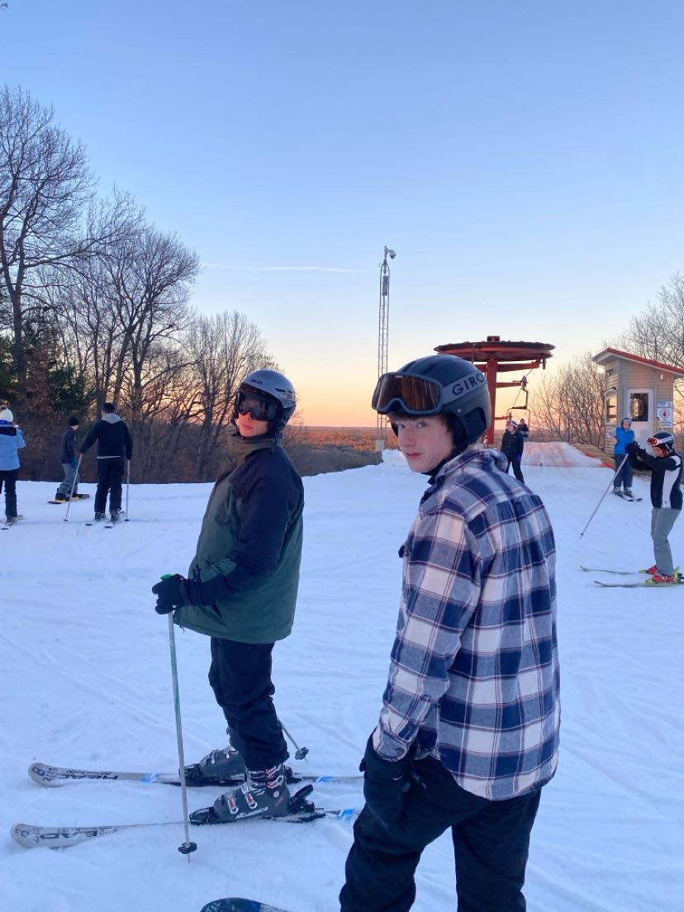

Camping out West with my two brothers — hit 7 national parks, hiked through Zion and Bryce, and camped for a bit. Long days, good hikes, and some of the best views I’ve ever seen.
Variety of Trips

Exploring different parts of the country has taught me how diverse and beautiful the U.S. is—each trip gave me new perspective and peace.
Being with different communities
From game nights to late-night fires, these moments with my dorm community—Dunne Hall—are what made Notre Dame feel like home.
Running
Running helps me stay grounded. It's a mental and physical reset, a personal challenge, and a way to bond with others—especially my brothers. I often listen to podcasts while I run, learning and decompressing at the same time.
Learning Through Coding and Podcasts
I’ve developed a strong interest in web development, starting with HTML and CSS and now diving into Python. I want to understand how technology works and use it to solve problems—especially to automate the mundane. After working at McDonald’s for three years, I realized how much time is spent on repetitive tasks. Learning to code is not just a curiosity, it’s a way to improve the world around me. I also enjoy listening to podcasts during my runs—whether it's tech, health, or philosophy, they keep my mind just as active as my body.